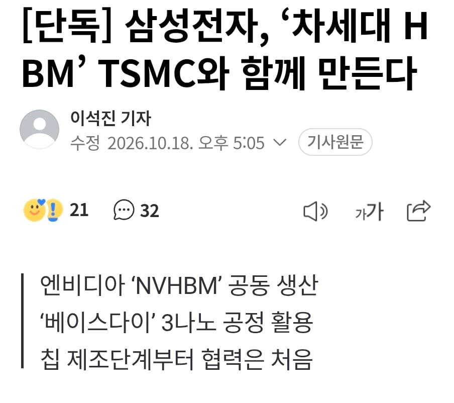
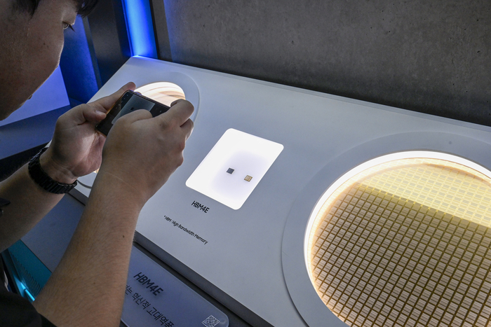
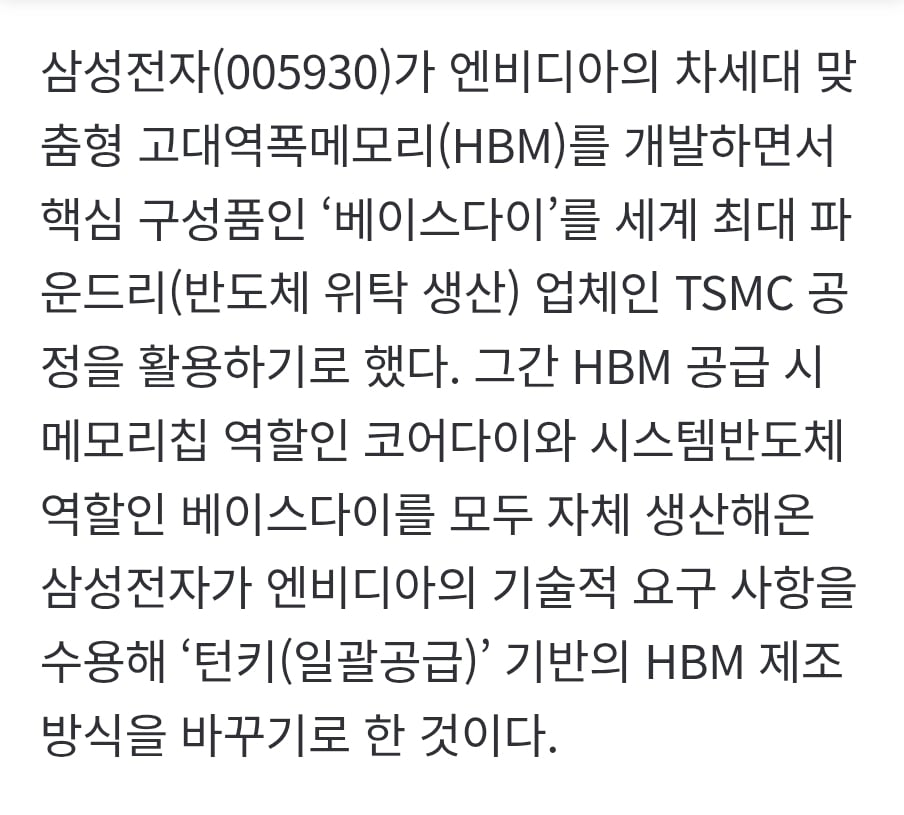

부끄러운일이다...
한 10년전에는 비슷한 수준이었는데 이젠 따라가기 벅찰 수준이 되었네
경영자가 손 놓고 멍때리고있는게 이렇게 크다...
난 개인적으로 삼전의 미래는 분야별 각자도생으로 오합지졸에 지나지 않을거로 보고있어서
삼전은 투자 안하고있다
단기적으로 사이클상 우세할순있겠지만
근본적인 펀더멘탈이나 경영철학이 무너지고있는게 느껴진다
니가뭔데 ㅋㅋㅋㅋ 뭔 대단히 전문가 마냥 말하네 ㅋㅋㅋ뭔 경영자가 손을 놓고 있음
몰랐어? 개붕이들은 세상에 나오면 당장 전세계를 경악케 할 씹현자들이라 혼란을 막기 위해 방구석에 은거하며 댓글로나마 자기 능력을 펼치는거임. 내가 보기엔 개붕이 10명 중 2~3명은 융중에 쳐박힌 제갈량급임
아닌거같으면 아닌거같은 이유를 말하면 됨
니 말은 아무런 내용이없음
녜녜 ㅋㅋㅋ 밑에 댓글들 보고도 이상함을 못느낀다면 그냥 그렇게 사세요 ㅋㅋㅋㅋ
ㅋㅋㅋㅋ너가 대단히 똑똑한 사람이니까 ㅋㅋ 아주 대단한 수준이네 ㅋㅋㅋ
아래댓글도 아무 내용없는 머저리뿐인데 뭘 보라는건지
머저리들 모여서 웅성웅성하는데 알맹이도 없고 맥락도 없고 뜬금없이 비꼬는 내용뿐
이번댓글은 맞는말했어 내가 너보다 대단하고 똑똑해보여
나뿐만 아니고 대부분의 사람이 너보단 똑똑하고 대단함
ㅋㅋㅋㅋㅋㅋㅋ
왜 세로드립이 아님??
근데 맞는 말이긴 함 공정 바꾸고나서 tsmc 따라잡을만했는데 뒤쳐졌지
애초에 투입되는 돈 단위가 다름
삼성이 그돈으로 tsmc 이기려면 tsmc 가 부정부패 배임 횡령 존나 저질러야 할 정도야
삼성 사내유보금 존나 쌓여있는거 누구나 알고있음
10년전에 삼전이 tsmc랑 비슷했다는거도 다 알려진 사실
재료는 있었는데 써먹은 사람 차이임
유튜브에 달려있는 댓글 같네 ㅋㅋㅋㅋㅋ
삼파에선 ㅈㅈ쳤나보네..
오히려 삼파 입장에선 이득일듯?
애당초 발열도 못잡던 애들인데 설계문제는 아닌지 실제 한계치는 어느 정도인지 비교대조군 생기는거니 + 타부서지만 협업 노하우도 공유 가능하고
삼파 병신들 진짜
삼성 ㅈ됨?
삼파가 해결 못하니 ㅋㅋ
파운드리는 넘사벽인가.. 인텔 삼성 전부 죽쑤네
악재인가
호재야 악재야?
악재인듯. 어차피 HBM 협업 안해도 파이 하이닉스랑 독식이었는데.
생산 능력 딸림을 스스로 인정한 격.
애초에 메모리에 투자할 거 모두 다 파운드리에 박아야 따라갈까 말까인데 그닥 그렇게 투자 안하고 있음 더미 샘플 돌리는 양 자체가 천지차이인데
저쪽은 똑똑한 인재를 반도체에 몰빵 한거고... 우리나라는 비행기도 만들고 탱크도 만들고 대포도 만들며 군함에 미사일 조선 자동차 반도체 게임 엔터 등등 골고루 나눠야 함.
그러고도 인재가 남아 페이커도 나오고, 신준서도 나오는 것임.
뭔가 좀 알아와줘
tsmc가 저걸 받아줌? 회장 할배가 했던 말중에 일본은 협력관계가 가능하지만 삼성은 뒷통수 치는걸로 협력할 가치도 없는 쓰레기 회사라고 했는데 ㅋㅋㅋㅋㅋㅋ 대만 새끼들 삼성에 대한 인식은 대만을 멸하겠다는 멸대기획（滅台計劃）을 삼성이 주도로 시작해서 디스플레이부터 핸드폰에 메모리까지 망하게 만들었다고 하던데 ㅋㅋㅋㅋㅋ
삼성 Hbm 로직다이는 못쓰겠으니 위에 메모리만 tsmc 로 보내라는뜻.
tsmc랑 삼성파운드리랑 인원수 차이만봐도
뒷꽁무늬라도 따라잡는게 용했던거지
타 파운드리는 포기하고 레거시로 먹고사니까..
대만은 저기에 몰빵한거고 우리는 분산투자라
tsmc는 진짜 대단하긴 해
무슨말이여 삼성이 tsmc에 위탁주문 넣는다는뜻?
엔비전용 nvhbm은 tsmc쓰는게 정배아니엿냐
파운드리는 결국 버리는 패가 되는건가
왜?인가 했더니 엔비디아측이 요구한거구나